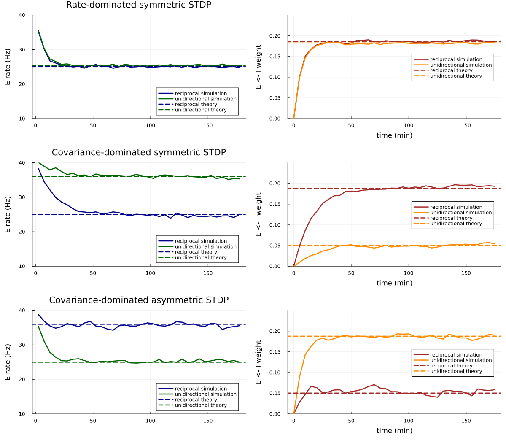

Structured inhibition in two-neuron motifs
This example studies inhibitory plasticity in a motif containing one excitatory (E) and one inhibitory (I) neuron. It reproduces the qualitative comparison in Figure 1 of:
Dylan Festa, Claudia Cusseddu, Julijana Gjorgjieva (2026) "Structured stabilization in recurrent neural circuits through inhibitory synaptic plasticity." eLife 15:RP111666. doi:10.7554/eLife.111666
We compare a reciprocal motif, in which E excites I and I inhibits E, with an effectively unidirectional motif, in which the E-to-I connection is negligible. For each motif we simulate three inhibitory-to-excitatory STDP rules:
- rate-dominated symmetric STDP;
- covariance-dominated symmetric STDP; and
- covariance-dominated asymmetric STDP.
Throughout the example, connection names and matrices use the package's post <- pre convention. Thus weight_ei denotes the plastic E <- I weight, while weight_ie denotes the fixed I <- E weight.
Setup
using Random
using Plots
using HawkesPlasticNetworks
global const H = HawkesPlasticNetworksHawkesPlasticNetworksThe inhibitory input is adjusted during each simulation to hold the mean inhibitory rate at rate_i_target. In the linear rate approximation,
\[r_E = h_E-w_{E\leftarrow I}r_I, \qquad h_I = r_I-w_{I\leftarrow E}r_E.\]
function inhibitory_input_for_target(
rate_i_target::Real,
weight_ie::Real,
weight_ei::Real,
input_e::Real)
rate_e = H.hardbounds(input_e-weight_ei*rate_i_target,0.0,Inf)
return rate_i_target-weight_ie*rate_e
endinhibitory_input_for_target (generic function with 1 method)simulate_motif constructs one motif and records its excitatory rate and plastic E <- I weight. A callback updates the inhibitory input every 0.5 seconds so that changes in the plastic weight do not move the target inhibitory rate. Seeding each run makes the comparison reproducible.
function simulate_motif(
plasticity_ei::H.AbstractPlasticityRule,
weight_ie::Real,
input_e::Real,
rate_i_target::Real;
weight_ei_start::Real=1E-4,
kernel_e::Real=30E-3,
kernel_i::Real=30E-3,
recording_interval::Real=300.0,
simulation_duration::Real=3*3600.0,
seed::Integer=0)
Random.seed!(seed)
H.reset!(plasticity_ei)
population_e = H.PopulationExpKernelExcitatory(
1,kernel_e;label="excitatory")
population_i = H.PopulationExpKernelInhibitory(
1,kernel_i;label="inhibitory")
weights_ie = fill(Float64(weight_ie),1,1)
weights_ei = fill(Float64(weight_ei_start),1,1)
connection_ie = H.ConnectionWithWeights(
population_i,weights_ie,population_e)
connection_ei = H.ConnectionWithWeights(
population_e,weights_ei,population_i;
plasticity_rules=(plasticity_ei,))
input_i_start = inhibitory_input_for_target(
rate_i_target,weight_ie,weight_ei_start,input_e)
connected_e = H.ConnectedPopulationExpKernel(
population_e,[Float64(input_e)],
(connection_ei,population_i))
connected_i = H.ConnectedPopulationExpKernel(
population_i,[Float64(input_i_start)],
(connection_ie,population_e))
recorder_rate_e = H.RecorderPopulationRate(
population_e,simulation_duration;Δt=recording_interval)
recorder_weight_ei = H.WeightMatrixRecorder(
connection_ei.weights,recording_interval,simulation_duration)
function update_inhibitory_input!(
_time,_population_index,_population_label,_neuron_index)
connected_i.input[1] = inhibitory_input_for_target(
rate_i_target,only(connection_ie.weights),
only(connection_ei.weights),input_e)
return nothing
end
keep_inhibitory_rate_fixed = H.DoEveryDt(
update_inhibitory_input!,0.5;Tstart=0.0)
network = H.RecurrentNetworkExpKernel(
(connected_e,connected_i),
(recorder_rate_e,recorder_weight_ei,keep_inhibitory_rate_fixed))
H.reset!(network)
time_now = 0.0
while time_now < simulation_duration
time_now = H.dynamics_step!(time_now,network)
end
rate_content = H.get_content(recorder_rate_e)
weight_content = H.get_content(recorder_weight_ei)
analytic_weight_ei = H.analytic_wei_two_neuron_motif_fixed_rhin(
plasticity_ei,population_i,population_e,
weight_ie,input_e,rate_i_target)
return (
rate_times=rate_content.times,
rates_e=rate_content.rates,
weight_times=weight_content.times,
weights_ei=vec(weight_content.weights[:,1,1]),
final_weight_ei=only(connection_ei.weights),
analytic_weight_ei=analytic_weight_ei)
endsimulate_motif (generic function with 1 method)Plasticity rules and motif configurations
All simulations use the same external E input, target I rate, kernel timescales, initial plastic weight, and weight bounds. A fixed I <- E weight of 0.5 creates the reciprocal motif; a value close to zero removes that feedback without introducing a structural zero.
input_e = 40.0
rate_i_target = 80.0
kernel_e = 30E-3
kernel_i = 30E-3
plasticity_timescale = 50E-3
weight_ei_start = 1E-4
weight_min = 1E-8
weight_max = 100.0
weight_ie_reciprocal = 0.5
weight_ie_unidirectional = 1E-8
simulation_duration = 3*3600.0
recording_interval = 300.0;The rate-dominated rule is the homeostatic symmetric rule. The other two rules have zero rate-product bias (B = 0) and differ in whether their STDP windows are symmetric or asymmetric.
rate_e_target = 25.0
plasticity_rate_dominated = let
weights = fill(weight_ei_start,1,1)
H.PlasticitySymmetricSTDP(
4E-7,1.0,-rate_e_target,0.0,0.2,123456.0,weights;
weight_min=weight_min,weight_max=weight_max)
end
plasticity_covariance_symmetric = let
weights = fill(weight_ei_start,1,1)
H.PlasticitySymmetricSTDP(
3E-6,0.0,-0.0302,0.362,plasticity_timescale,10.0,weights;
weight_min=weight_min,weight_max=weight_max)
end
plasticity_covariance_asymmetric = let
weights = fill(weight_ei_start,1,1)
H.PlasticityAsymmetricSTDP(
3E-6,0.0,-0.0710,3.98,plasticity_timescale,1.0,weights;
weight_min=weight_min,weight_max=weight_max)
end;Run the motifs
Each plasticity object is reset before a run, and every configuration gets a distinct deterministic seed. The analytical fixed point is calculated from the same rule and motif parameters as the corresponding simulation.
rule_configurations = (
(name="Rate-dominated symmetric STDP",
rule=plasticity_rate_dominated),
(name="Covariance-dominated symmetric STDP",
rule=plasticity_covariance_symmetric),
(name="Covariance-dominated asymmetric STDP",
rule=plasticity_covariance_asymmetric),
)
motif_results = map(enumerate(rule_configurations)) do (rule_index,configuration)
reciprocal = simulate_motif(
configuration.rule,weight_ie_reciprocal,input_e,rate_i_target;
weight_ei_start=weight_ei_start,kernel_e=kernel_e,kernel_i=kernel_i,
recording_interval=recording_interval,
simulation_duration=simulation_duration,seed=100+2rule_index)
unidirectional = simulate_motif(
configuration.rule,weight_ie_unidirectional,input_e,rate_i_target;
weight_ei_start=weight_ei_start,kernel_e=kernel_e,kernel_i=kernel_i,
recording_interval=recording_interval,
simulation_duration=simulation_duration,seed=101+2rule_index)
(name=configuration.name,
reciprocal=reciprocal,unidirectional=unidirectional)
end;Simulation and analytical fixed points
Solid curves show the simulations and dashed lines show the first-order analytical fixed points. The top panel in each row gives the E rate; the bottom panel gives the plastic E <- I weight. Using one combined figure keeps axis sizes, colors, and line styles consistent across all three rules.
rate_color_reciprocal = :darkblue
rate_color_unidirectional = :darkgreen
weight_color_reciprocal = :brown
weight_color_unidirectional = :darkorange
line_width = 2.5
panels = Any[]
for result in motif_results
reciprocal = result.reciprocal
unidirectional = result.unidirectional
rate_panel = plot(
reciprocal.rate_times./60.0,reciprocal.rates_e;
label="reciprocal simulation",color=rate_color_reciprocal,
linewidth=line_width,title=result.name,ylabel="E rate (Hz)",
ylim=(10,40),legend=:bottomright)
plot!(
rate_panel,unidirectional.rate_times./60.0,
unidirectional.rates_e;
label="unidirectional simulation",color=rate_color_unidirectional,
linewidth=line_width)
hline!(
rate_panel,
[input_e-reciprocal.analytic_weight_ei*rate_i_target];
label="reciprocal theory",color=rate_color_reciprocal,
linestyle=:dash,linewidth=line_width)
hline!(
rate_panel,
[input_e-unidirectional.analytic_weight_ei*rate_i_target];
label="unidirectional theory",color=rate_color_unidirectional,
linestyle=:dash,linewidth=line_width)
weight_panel = plot(
reciprocal.weight_times./60.0,reciprocal.weights_ei;
label="reciprocal simulation",color=weight_color_reciprocal,
linewidth=line_width,xlabel="time (min)",ylabel="E <- I weight",
ylim=(0,0.25),legend=:right)
plot!(
weight_panel,unidirectional.weight_times./60.0,
unidirectional.weights_ei;
label="unidirectional simulation",color=weight_color_unidirectional,
linewidth=line_width)
hline!(
weight_panel,[reciprocal.analytic_weight_ei];
label="reciprocal theory",color=weight_color_reciprocal,
linestyle=:dash,linewidth=line_width)
hline!(
weight_panel,[unidirectional.analytic_weight_ei];
label="unidirectional theory",color=weight_color_unidirectional,
linestyle=:dash,linewidth=line_width)
push!(panels,rate_panel,weight_panel)
end
plot(
panels...;
layout=(3,2),size=(1200,1050),
left_margin=5Plots.mm,bottom_margin=4Plots.mm)
The reciprocal interaction changes the correlation structure seen by the plastic synapse. Consequently, the covariance-dominated rules can stabilize different E rates in the two motifs, whereas the rate-dominated rule remains governed primarily by its target rate. Small differences between solid and dashed curves are expected because the analytical result is a first-order, unrectified approximation.
This page was generated using Literate.jl.